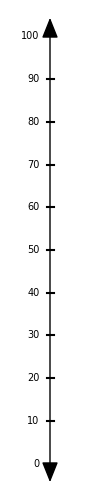
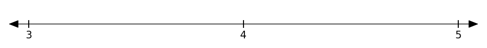
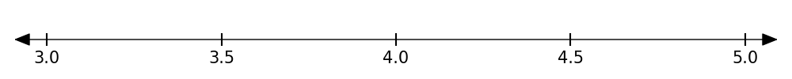
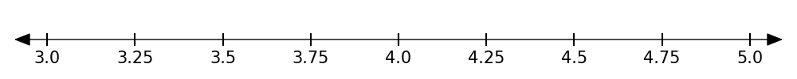
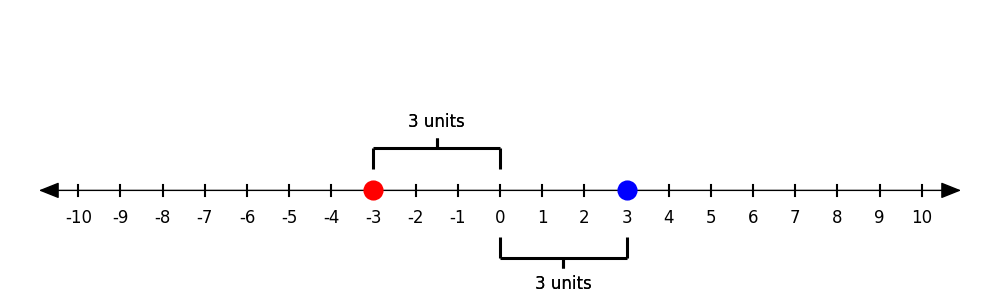
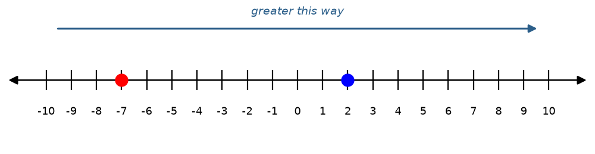
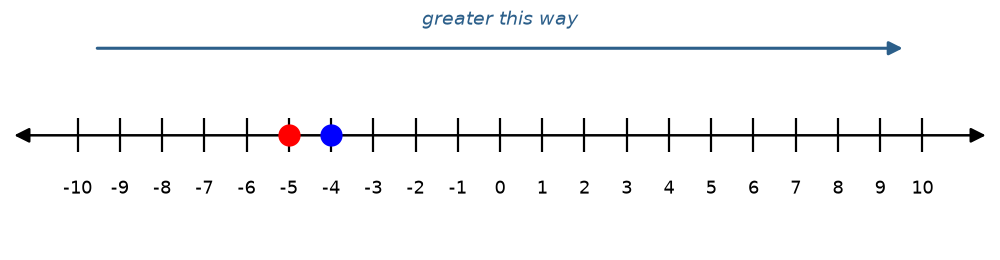
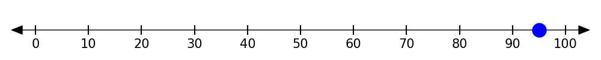

1. What number is exactly halfway between 3 and 9?
{{a}}6
{{/a}}2. Which number is bigger: −4 or −9?
{{a}}−4. It is farther right on the number line.
{{/a}}3. Which is farther from 0: −7 or 5?
{{a}}−7, because |−7| = 7 and |5| = 5
{{/a}}Every tick mark is an integer (a whole number).
Numbers to the right of zero are positive. Numbers to the left of zero are negative.
Number lines can count by 1s, 5s, 10s, or more. They can be horizontal or vertical.




a thermometer, a ruler, a timeline, a football field, a volume slider
{{/a}}
The opposite of 0 is {{a}}0{{/a}}.
Opposite: {{a}}8{{/a}} Both are {{a}}8{{/a}} units from zero.
|−5| = {{a}}5{{/a}}
|5| = {{a}}5{{/a}}
Distance = {{a}}|−5| + |3| = 8{{/a}} miles
{{a}}No. Distance is never negative.{{/a}}
|−12| = {{a}}12{{/a}}
|7| = {{a}}7{{/a}}
1. Numbers to the right of zero are {{a}}positive{{/a}}.
2. 3 and −3 are {{a}}opposites{{/a}}. They are the same distance from zero.
3. Absolute value is the {{a}}distance{{/a}} from zero.
4. Absolute value is never {{a}}negative{{/a}}.
a. 2 {{a}}>{{/a}} −7
{{nl}}b. −4 {{a}}>{{/a}} −5 two negatives: look again
{{nl}} {{a}}
-7">
-5">a. −6 {{a}}<{{/a}} −2
b. |−6| {{a}}>{{/a}} |−2|
−2 + 6 = {{a}}4{{/a}}
Rewrite: {{a}}400 + (−450){{/a}} = {{a}}−50{{/a}}
Rewrite: {{a}}201 + 5{{/a}} = {{a}}206{{/a}}
| Rewrite | Value | What it means | |
|---|---|---|---|
| 5 − 8 | {{a}}5 + (−8){{/a}} | {{a}}−3{{/a}} | had $5, spent $8 |
| −4 − 3 | {{a}}−4 + (−3){{/a}} | {{a}}−7{{/a}} | owed $4, borrowed $3 more |
| −6 − (−10) | {{a}}−6 + 10{{/a}} | {{a}}4{{/a}} | owed $6, a $10 debt was cancelled |
| −9 + 4 | already an addition | {{a}}−5{{/a}} | owed $9, paid back $4 |
a. 2 − 9 Rewrite: {{a}}2 + (−9){{/a}} = {{a}}−7{{/a}}
b. −5 − 3 Rewrite: {{a}}−5 + (−3){{/a}} = {{a}}−8{{/a}}
c. −3 − (−8) Rewrite: {{a}}−3 + 8{{/a}} = {{a}}5{{/a}}
1. The number farther to the {{a}}right{{/a}} on the number line is the greater one.
2. −4 is {{a}}greater{{/a}} than −5.
3. Subtracting is the same as adding the {{a}}opposite{{/a}}.
a. −4, 0, and 3
{{nl-blank}}b. Your age
{{nl-blank}}c. The number halfway between 5 and 9{{a}} 7{{/a}}
{{nl-blank}}
{{a}}Answers vary. Example: What was the temperature on July 4th? (about 95)
{{/a}}3. Opposite of 42 = {{a}}−42{{/a}}
4. Opposite of −3 = {{a}}3{{/a}}
5. Draw a number line with two numbers that are opposites.
{{nl-blank}}6. Does 3.5 have an opposite? If yes, what is it? {{a}}yes, −3.5{{/a}}
a. |−9| = {{a}}9{{/a}}
b. |6| = {{a}}6{{/a}}
c. |0| = {{a}}0{{/a}}
d. |−2.5| = {{a}}2.5{{/a}}
8. Two different numbers both have an absolute value of 12. What are they? {{a}}12 and −12{{/a}}
9. A hiker is 400 feet below the rim of a canyon. Her friend is 250 feet above the rim. Who is farther from the rim?
{{a}}The hiker. |−400| = 400 is more than |250| = 250.{{/a}}
10. Which is greater, 5 or −10? {{a}}5{{/a}}
11. Which has the greater absolute value, 5 or −10? {{a}}−10{{/a}}
12. Is 28 bigger than −30? {{a}}yes{{/a}} Why? {{a}}28 is right of −30 on the number line{{/a}}
a. −11 {{a}}>{{/a}} −13
b. 7 {{a}}>{{/a}} −2
c. |−3| {{a}}<{{/a}} |5|
a. −4 or −5 {{a}}−4{{/a}}
b. 3 or the opposite of 7 {{a}}3{{/a}}
c. |−5| or |4| {{a}}|−5|{{/a}}
a. −7 and 2{{a}} 2 > −7{{/a}}
{{nl}}b. The year you were born and the current year
{{nl-blank}}a. −3 + 5 = {{a}}2{{/a}}
{{nl}}b. 3 − 5 = {{a}}−2{{/a}}
{{nl}}c. −3 + (−3) = {{a}}−6{{/a}}
{{nl}}d. 3 − (−3) = {{a}}6{{/a}}
{{nl}}Write it as an addition: {{a}}−12 + 20{{/a}} = {{a}}8°F{{/a}}
Write it as an addition: {{a}}−45 + (−30){{/a}} = {{a}}−75 ft{{/a}}
Write it as an addition: {{a}}−8 + 5{{/a}} = {{a}}−$3{{/a}}